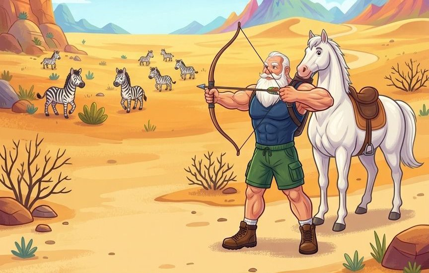

کتاب اول، قصهٔ رستم و سُهراب، مهر ۱۴۰۵
رُستَم، یک پهلوان بسیار قوی در کشور ایران بود. هروقت دشمنی به کشورِ ایران حمله میکرد، رُستَم با آن دشمن میجنگید. یکی از روزها، رُستَم کمی ناراحت و غمگین بود؛ برای همین تصمیم گرفت به شکار برود:
غـَمی بود دِلَش سازِ نـَخْچیر کرد
کَمَر بست و تــَرکَش پُر از تیر کرد
او پیاده رفت تا به کشور توران رسید. در آنجا یک بیابان بزرگ دید که آن بیابان، پُر از گورخر بود:
چو نزدیکیِ مرز توران رسید
بیابان سراسر پُر از گور دید

اینها فقط چند خطِ اول داستان است! رستم که برای شکار به توران آمده بود، درگیر یک داستان جذاب و خواندنی شد. متن این داستان بسیار ساده نوشته شده و در هر صفحه، گزیدهای از ابیات مربوط به متن آورده شده است. معنی کلمات دشوار، در پاورقی آورده شده است. در زیر، یک نسخهٔ رنگی، و یک نسخهٔ نقاشی ویژه رنگآمیزی، برای بارگیری قرار داده شده است. به علت احساسِ رسالت فرهنگی، این دو نسخه را به صورت رایگان قرار دادهایم؛ اما در صورتی که قصد حمایت مالی از این اثر دارید، به پایین همین صفحه مراجعه بفرمایید.
حمایت مالی از «قصّهٔ رستم و سهراب»
ایدههای زیادی برای تولید کتابهای دیگر علمی و فرهنگی داریم. مبلغی که بابت حمایت از این کتاب به ما پرداخت میکنید، انگیزهٔ ما را برای تولید آثار بعدی افزایش خواهد داد.
شمارهٔ حساب: 6219861423584811
مبلغ پیشنهادی: ۲۰۰ هزارتومان